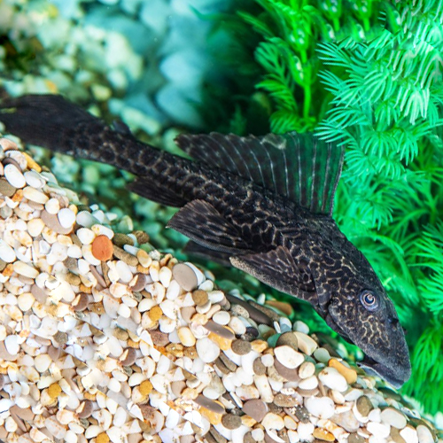

 Los Plecostomus pertenecen a la familia de los Loricáridos, la cual llega a contener más de 400 especies. Dentro de esta familia podemos encontrar gran cantidad de los denominados peces gato, todos ellos con gran afinidad a alimentarse de las plagas de algas del acuario.
El Hypostomus plecostomus (Linnaeus, 1758) es originario de Sudamérica, en toda la Amazonia aunque en la actualidad se puede localizar en otras muchas zonas debido a su gran adaptabilidad a diferentes condiciones acuáticas. Habita por lo general ríos y arroyos de poca profundidad dotados de cierta corriente y repletos de cantos rodados entre los que se asientan las algas. Suele habitar aguas de pH ligeramente ácidos entorno al 6,5 y temperaturas de 25º C.
Morfológicamente lo que llama la atención es su potente aleta dorsal dotada de entre 6 y 7 radios, siendo rígido el delantero. El despliegue de la aleta lo realiza el animal para nadar por el acuario o ante una perturbación. El resto del tiempo permanece plegada sin que este motivo sea advertencia de enfermedad. Presenta unos ojos de pequeño tamaño. Son mayoritariamente nocturnos por lo que su visión no es buena valiéndose del olfato y de las vibraciones para desenvolverse en el medio.
Si algo llama la atención en este enorme pez chupa algas es la ventosa que porta en la boca junto a dos bigotes espinosos. Esta ventosa sirve para asirse fuertemente a las rocas mientras rasca las colonias de algas con sus pequeños dientes afilados.
Es un pez escarbador que por su medida es fácil que nos desmonte el acuario. Emplea tanto su potente cola como la cabeza para escarbar en el sustrato.